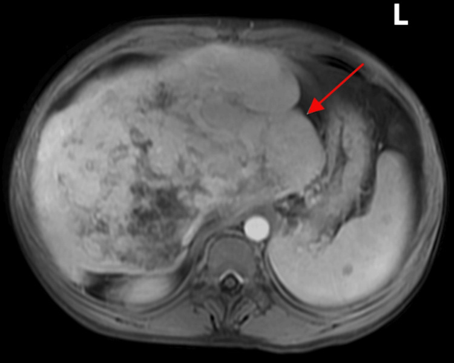

Ficha del catálogo
Obstrucción del drenaje venoso hepático
- Sistema
- Digestivo
- Modalidad
- RM
- Región
- Venas suprahepáticas y vena cava inferior
- Dificultad
- Avanzado
Es el bloqueo del flujo de salida de la sangre hepática, localizado en las venas suprahepáticas o en el segmento de la vena cava inferior próximo a ellas, conocido clásicamente como síndrome de Budd-Chiari. Se asocia a trastornos protrombóticos, a neoplasias y a membranas o bridas de la cava. Se manifiesta con dolor, hepatomegalia y ascitis, con formas agudas, subagudas y crónicas.
Técnica
La resonancia con contraste dinámico ofrece una excelente valoración conjunta del parénquima, de las venas suprahepáticas y de la vena cava, sin radiación y con buena caracterización de los nódulos que aparecen en la forma crónica. El ultrasonido con Doppler es el estudio inicial y la tomografía se usa cuando se requiere rapidez o cuando la resonancia no es posible.
Qué observar
- Ausencia de visualización de una o varias venas suprahepáticas, o su sustitución por cordones fibrosos
- Flujo ausente, invertido o sin modulación cardiaca en el Doppler de las suprahepáticas
- Colaterales intrahepáticas de trayecto arciforme que conectan territorios venosos, con aspecto en telaraña
- Hipertrofia del lóbulo caudado, que drena directamente a la vena cava por venas propias
- Realce heterogéneo del parénquima, con centro que capta más y periferia que capta menos en las fases precoces
- Nódulos regenerativos hipervasculares en la forma crónica, ascitis y esplenomegalia
Hallazgos
En la fase aguda el hígado aparece aumentado y edematoso, con realce parcheado que predomina en la región central y que se invierte en las fases tardías, y con ascitis abundante. Las venas suprahepáticas no se identifican o muestran material endoluminal, y aparecen colaterales intrahepáticas serpiginosas. El lóbulo caudado se hipertrofia de forma característica porque conserva su drenaje directo a la cava. En la forma crónica el parénquima se vuelve heterogéneo y fibrótico, con nódulos hipervasculares que suelen ser regenerativos benignos pero que obligan a vigilar la aparición de hepatocarcinoma.
Perlas
La combinación de hipertrofia del lóbulo caudado con la falta de identificación de las venas suprahepáticas es la firma más reconocible del cuadro. Los nódulos hipervasculares de la forma crónica suelen ser benignos, múltiples, homogéneos y sin lavado, a diferencia del hepatocarcinoma, que muestra lavado y cápsula. Conviene valorar siempre la vena cava inferior en toda su longitud, porque la obstrucción puede localizarse ahí y no en las venas hepáticas.
Diagnóstico diferencial
- Congestión hepática por insuficiencia cardiaca derecha
- Venas suprahepáticas y cava dilatadas con reflujo precoz de contraste, sin hipertrofia caudada llamativa.
- Síndrome de obstrucción sinusoidal
- Antecedente de quimioterapia o de trasplante de médula, con venas suprahepáticas permeables aunque estrechas.
- Cirrosis de otra causa
- Contorno nodular difuso con venas suprahepáticas permeables y sin colaterales intrahepáticas en telaraña.
- Pericarditis constrictiva
- Pericardio engrosado y calcificado con dilatación de la cava y contexto cardiológico.
- Trombosis portal aislada
- El defecto está en el eje portal y el drenaje venoso hepático se conserva.
Simuladores
- Venas suprahepáticas comprimidas por hepatomegalia o por lesiones ocupantes
- Perfusión hepática heterogénea transitoria por artefacto de inyección
- Hígado congestivo por sobrecarga de volumen sin obstrucción verdadera
Por modalidad
- RM
- Aporta la mejor combinación de estudio vascular, caracterización del parénquima y valoración de nódulos, sin radiación
- US
- El Doppler es el estudio inicial y muestra la ausencia de flujo, la inversión y las colaterales intrahepáticas
- TC
- Es rápida y accesible, valora bien la cava y las suprahepáticas y detecta causas compresivas
Protocolo
Resonancia con secuencias T2 con y sin supresión grasa, T1 en fase y fuera de fase, difusión y estudio dinámico tras gadolinio con fases arterial, portal y tardía, más una secuencia angiográfica que cubra las venas suprahepáticas y la vena cava inferior. El Doppler se realiza con exploración de las tres venas suprahepáticas, con valoración de la modulación cardiaca del trazado.
Clasificación
Errores frecuentes
- Buscar el obstáculo solo en las venas suprahepáticas y omitir la vena cava inferior
- Interpretar los nódulos regenerativos hipervasculares como hepatocarcinoma sin valorar el lavado
- Confundir la congestión hepática de origen cardiaco con una obstrucción venosa verdadera

Budd-Chiari venas suprahepaticas lobulo caudado colaterales en telarana ascitis resonancia nodulos regenerativos